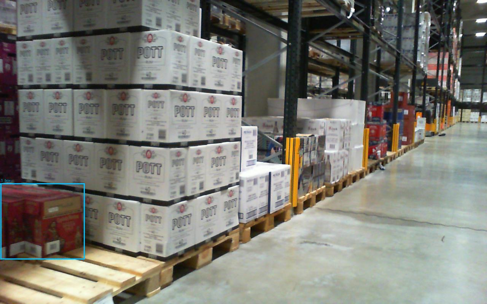
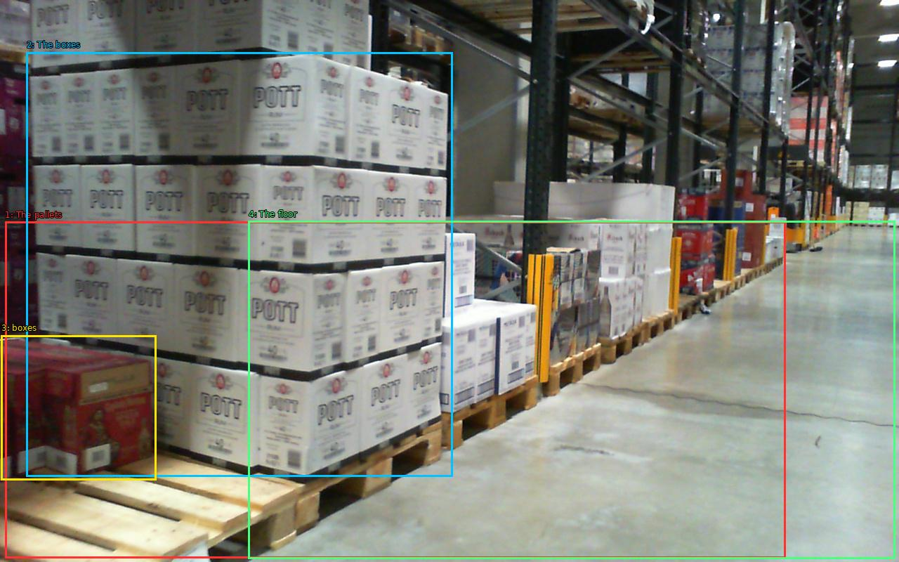

The image shows a large warehouse with rows of pallets and shelves. The pallets are arranged in a neat and orderly manner, and the shelves are filled with boxes of various sizes and colors. The boxes are stacked on top of each other and have the word "POTT" written on them in white letters. The warehouse appears to be well-stocked with various items, and there are other shelves and racks visible in the background. The floor is made of concrete and the ceiling is high with overhead lights. The overall atmosphere of the warehouse is industrial and organized.


Original · Caption raw · Grounding raw · Koordinate
Številke so lokalni ID regije. Dolge slikovne oznake so skrajšane; spodaj so celotne fraze. Napovedane regije se lahko prekrivajo ali opisujejo skupine.
| ID | Celotna fraza | bbox xyxy |
|---|---|---|
| 1 | The pallets | [7.039999961853027, 315.6000061035156, 1118.0799560546875, 794.7999877929688] |
| 2 | The boxes | [37.7599983215332, 74.0, 644.47998046875, 678.0] |
| 3 | boxes | [1.9199999570846558, 477.20001220703125, 222.0800018310547, 683.6000366210938] |
| 4 | The floor | [353.91998291015625, 314.8000183105469, 1274.239990234375, 795.6000366210938] |